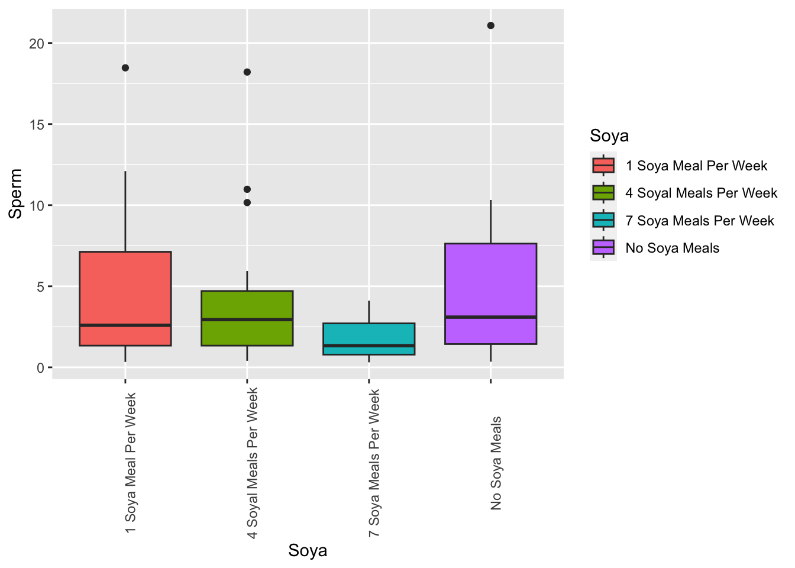

15_Non_parametric
RLT
6/26/2017
#Non-parametric tests
All the previous tests assume that the data have different characteristics, such as normal distribution and homogeneity of variance. If the data CANNOT comply with these assumptions then the previous tests should not be used and alternative tests have to be explored. One set of tests are known as “Non-Parametric tests” or “Distribution Free Tests”.
Most of these tests do no use the original data but use the Ranks of the data. That is is done by assigning “new values” to the original data. The lowest value is assigned the rank of 1, the the next lowest value the rank of 2, and so on. Thus the highest value has the highest rank.
Then the analysis are on the ranks and NOT on the original values.
Los paquetes
#install.packages("car")
#install.packages("clinfun")
#install.packages("ggplot2")
#install.packages("pastecs")
#install.packages("pgirmess")Activating packages
library(car) # Companion to applied Regression
library(clinfun) # Clinical Trial Design and Data Analysis Functions
library(ggplot2) # Graphic production
library(pastecs) # Package for analysis of Space -Time ecological Series
library(pgirmess) # Spatial Analysis and Data Mining for Field Ecologist## The legacy packages maptools, rgdal, and rgeos, underpinning the sp package,
## which was just loaded, will retire in October 2023.
## Please refer to R-spatial evolution reports for details, especially
## https://r-spatial.org/r/2023/05/15/evolution4.html.
## It may be desirable to make the sf package available;
## package maintainers should consider adding sf to Suggests:.
## The sp package is now running under evolution status 2
## (status 2 uses the sf package in place of rgdal)## Registered S3 method overwritten by 'pgirmess':
## method from
## print.mc mc2d##
## Attaching package: 'pgirmess'## The following object is masked from 'package:Rmisc':
##
## CIWilcoxon rank-sum test
The function “gl()” is a function that generates factors by specifying the pattern of their levels gl(n, k, lenght=n*k, labels=1:n, ordered=FALSE)
The hypothesis:
The level of depression posterior to the intake of alcohol is the same as those which take ecstasy.
Is this the null or alternate hipothesis?
The data come from 20 participants, 10 drinking alcohol and 10 taking ecstasy. Posterior to their consumption the “Beck Depression Inventory” was conducted on each of the participants. The scale is from 0 (happy) to 63 (truly depressed)
https://www.ismanet.org/doctoryourspirit/pdfs/Beck-Depression-Inventory-BDI.pdf
Enter raw data
sundayBDI<-c(15, 35, 16, 18, 19,
17, 27, 16, 13, 20,
16, 15, 20, 15, 16,
13, 14, 19, 18, 18)
wedsBDI<-c(28, 35, 35, 24, 39, 32,
27, 29, 36, 35, 5, 6,
30, 8, 9, 7, 6, 17,
3, 10)
drug<-gl(2, 10, labels = c("Ecstasy", "Alcohol"))
Gender=gl(2, 10, labels = c("Male", "Female"))
drugData<-data.frame(Gender, drug, sundayBDI, wedsBDI)
drugData| Gender | drug | sundayBDI | wedsBDI |
|---|---|---|---|
| Male | Ecstasy | 15 | 28 |
| Male | Ecstasy | 35 | 35 |
| Male | Ecstasy | 16 | 35 |
| Male | Ecstasy | 18 | 24 |
| Male | Ecstasy | 19 | 39 |
| Male | Ecstasy | 17 | 32 |
| Male | Ecstasy | 27 | 27 |
| Male | Ecstasy | 16 | 29 |
| Male | Ecstasy | 13 | 36 |
| Male | Ecstasy | 20 | 35 |
| Female | Alcohol | 16 | 5 |
| Female | Alcohol | 15 | 6 |
| Female | Alcohol | 20 | 30 |
| Female | Alcohol | 15 | 8 |
| Female | Alcohol | 16 | 9 |
| Female | Alcohol | 13 | 7 |
| Female | Alcohol | 14 | 6 |
| Female | Alcohol | 19 | 17 |
| Female | Alcohol | 18 | 3 |
| Female | Alcohol | 18 | 10 |
Or Import the data
Exploratory analysis
## Rows: 20 Columns: 3
## ── Column specification ──────────────────────────────────────────────────────────────
## Delimiter: ","
## chr (1): drug
## dbl (2): sundayBDI, wedsBDI
##
## ℹ Use `spec()` to retrieve the full column specification for this data.
## ℹ Specify the column types or set `show_col_types = FALSE` to quiet this message.| drug | sundayBDI | wedsBDI |
|---|---|---|
| Ecstasy | 15 | 28 |
| Ecstasy | 35 | 35 |
| Ecstasy | 16 | 35 |
| Ecstasy | 18 | 24 |
| Ecstasy | 19 | 39 |
| Ecstasy | 17 | 32 |
Descriptive statistics.
Note here we can use drugData[,c(2:3)], that we want the stats for column 2 and 3, and these be seperated by the drug (column 1).
NOTE the shapiro wilks test on the last line.
## [1] "Gender" "drug" "sundayBDI" "wedsBDI"## drugData$drug: Ecstasy
## sundayBDI wedsBDI
## nbr.val 10.00000000 10.0000000
## nbr.null 0.00000000 0.0000000
## nbr.na 0.00000000 0.0000000
## min 13.00000000 24.0000000
## max 35.00000000 39.0000000
## range 22.00000000 15.0000000
## sum 196.00000000 320.0000000
## median 17.50000000 33.5000000
## mean 19.60000000 32.0000000
## SE.mean 2.08806130 1.5129074
## CI.mean.0.95 4.72352283 3.4224344
## var 43.60000000 22.8888889
## std.dev 6.60302961 4.7842334
## coef.var 0.33688927 0.1495073
## skewness 1.23571300 -0.2191665
## skew.2SE 0.89929826 -0.1594999
## kurtosis 0.26030385 -1.4810114
## kurt.2SE 0.09754697 -0.5549982
## normtest.W 0.81063991 0.9411413
## normtest.p 0.01952060 0.5657814
## ------------------------------------------------------------
## drugData$drug: Alcohol
## sundayBDI wedsBDI
## nbr.val 10.00000000 1.000000e+01
## nbr.null 0.00000000 0.000000e+00
## nbr.na 0.00000000 0.000000e+00
## min 13.00000000 3.000000e+00
## max 20.00000000 3.000000e+01
## range 7.00000000 2.700000e+01
## sum 164.00000000 1.010000e+02
## median 16.00000000 7.500000e+00
## mean 16.40000000 1.010000e+01
## SE.mean 0.71802197 2.514182e+00
## CI.mean.0.95 1.62427855 5.687475e+00
## var 5.15555556 6.321111e+01
## std.dev 2.27058485 7.950542e+00
## coef.var 0.13845030 7.871823e-01
## skewness 0.11686189 1.500374e+00
## skew.2SE 0.08504701 1.091907e+00
## kurtosis -1.49015904 1.079110e+00
## kurt.2SE -0.55842624 4.043886e-01
## normtest.W 0.95946584 7.534665e-01
## normtest.p 0.77976459 3.933024e-03Test of equality of variance
This is one of the assumptions of parametric tests
#leveneTest(drugData$sundayBDI, drugData$drug, center = "mean")
leveneTest(drugData$sundayBDI, drugData$drug, center = "median")| Df | F value | Pr(>F) |
|---|---|---|
| 1 | 1.88 | 0.187 |
| 18 |
#leveneTest(drugData$wedsBDI, drugData$drug, center = "mean")
leveneTest(drugData$wedsBDI, drugData$drug, center = "median")| Df | F value | Pr(>F) |
|---|---|---|
| 1 | 0.0911 | 0.766 |
| 18 |
Wilcoxon rank-sum test
wilcox.test(x, y = NULL, alternative = c(“two.sided”, “less”, “greater”), mu = 0, paired = FALSE, exact = FALSE, correct = FALSE, conf.level = 0.95, na.action = na.exclude)
This is how to assing the Rank by Hand…… This is an example, the scripts will do this automatically.
Look for the smallest value……in the wedsBDI……
| Gender | drug | sundayBDI | wedsBDI | wedsRank |
|---|---|---|---|---|
| Male | Ecstasy | 15 | 28 | 12 |
| Male | Ecstasy | 35 | 35 | 17 |
| Male | Ecstasy | 16 | 35 | 17 |
| Male | Ecstasy | 18 | 24 | 10 |
| Male | Ecstasy | 19 | 39 | 20 |
| Male | Ecstasy | 17 | 32 | 15 |
| Male | Ecstasy | 27 | 27 | 11 |
| Male | Ecstasy | 16 | 29 | 13 |
| Male | Ecstasy | 13 | 36 | 19 |
| Male | Ecstasy | 20 | 35 | 17 |
| Female | Alcohol | 16 | 5 | 2 |
| Female | Alcohol | 15 | 6 | 3.5 |
| Female | Alcohol | 20 | 30 | 14 |
| Female | Alcohol | 15 | 8 | 6 |
| Female | Alcohol | 16 | 9 | 7 |
| Female | Alcohol | 13 | 7 | 5 |
| Female | Alcohol | 14 | 6 | 3.5 |
| Female | Alcohol | 19 | 17 | 9 |
| Female | Alcohol | 18 | 3 | 1 |
| Female | Alcohol | 18 | 10 | 8 |
Wilcoxon test: A non-parametric test
## [1] "Gender" "drug" "sundayBDI" "wedsBDI" "wedsRank"| Gender | drug | sundayBDI | wedsBDI | wedsRank |
|---|---|---|---|---|
| Male | Ecstasy | 15 | 28 | 12 |
| Male | Ecstasy | 35 | 35 | 17 |
| Male | Ecstasy | 16 | 35 | 17 |
| Male | Ecstasy | 18 | 24 | 10 |
| Male | Ecstasy | 19 | 39 | 20 |
| Male | Ecstasy | 17 | 32 | 15 |
## Warning in wilcox.test.default(x = DATA[[1L]], y = DATA[[2L]], ...): cannot
## compute exact p-value with ties##
## Wilcoxon rank sum test with continuity correction
##
## data: sundayBDI by drug
## W = 64.5, p-value = 0.2861
## alternative hypothesis: true location shift is not equal to 0## Warning in wilcox.test.default(x = DATA[[1L]], y = DATA[[2L]], ...): cannot
## compute exact p-value with ties##
## Wilcoxon rank sum test with continuity correction
##
## data: wedsBDI by drug
## W = 96, p-value = 0.000569
## alternative hypothesis: true location shift is not equal to 0the following approach is better because it can deal with ties (values that are equal)
sunModel2<-wilcox.test(sundayBDI ~ drug, data = drugData, exact = FALSE, correct= FALSE, conf.int=T)
sunModel2##
## Wilcoxon rank sum test
##
## data: sundayBDI by drug
## W = 64.5, p-value = 0.2692
## alternative hypothesis: true location shift is not equal to 0
## 95 percent confidence interval:
## -1.000049 5.000033
## sample estimates:
## difference in location
## 1.000023wedModel2<-wilcox.test(wedsBDI ~ drug, data = drugData, exact = FALSE, correct= FALSE, conf.int=T)
wedModel2##
## Wilcoxon rank sum test
##
## data: wedsBDI by drug
## W = 96, p-value = 0.0004943
## alternative hypothesis: true location shift is not equal to 0
## 95 percent confidence interval:
## 18.00001 28.99996
## sample estimates:
## difference in location
## 23.55281Class Excercise
How many time have you gone to Disney, and is there a difference between genders?
Use Wilcoxon Test
Disney=c(3,5,0,1,2,
0,2,0,2,3,
2,1,4, 3,
2, 1, 2, 6,7,
11, 7, 9)
Gender=c("F","F","F","F","F",
"F","F","F","F","F",
"F","F","F","F",
"M","M","M","M","M",
"M","M","M")
DF=data.frame(Disney,Gender)
DF| Disney | Gender |
|---|---|
| 3 | F |
| 5 | F |
| 0 | F |
| 1 | F |
| 2 | F |
| 0 | F |
| 2 | F |
| 0 | F |
| 2 | F |
| 3 | F |
| 2 | F |
| 1 | F |
| 4 | F |
| 3 | F |
| 2 | M |
| 1 | M |
| 2 | M |
| 6 | M |
| 7 | M |
| 11 | M |
| 7 | M |
| 9 | M |

## `stat_bin()` using `bins = 30`. Pick better value with `binwidth`.
##
## Wilcoxon rank sum test
##
## data: Disney by Gender
## W = 24, p-value = 0.02681
## alternative hypothesis: true location shift is not equal to 0
## 95 percent confidence interval:
## -6.999942e+00 -2.032046e-05
## sample estimates:
## difference in location
## -3.999936Krukall-Wallis Test
This is a test similar to ANOVA, thus multiple groups, 3+ grupos
However, you test for the differences in than rank among groups (not the mean).
The null hypothesis is that the sum or mean rank in Ho: G1 = G2 = G3……Gk The alternative hypothesis is that at least one of the groups rank is different from another one.
Soya and the effect on sperm production in human males.
Soy food and isoflavone intake in relation to semen quality parameters among men from an infertility clinic
Jorge E. Chavarro Thomas L. Toth Sonita M. Sadio Russ Hauser Hum Reprod. 2008 Nov;23(11):2584-90. doi: 10.1093/humrep/den243. Epub 2008 Jul 23.
They found that the amount of sperm production is reduced in males which consume more soya
Abstract
BACKGROUND:
High isoflavone intake has been related to decreased fertility in animal studies, but data in humans are scarce. Thus, we examined the association of soy foods and isoflavones intake with semen quality parameters.
METHODS:
The intake of 15 soy-based foods in the previous 3 months was assessed for 99 male partners of subfertile couples who presented for semen analyses to the Massachusetts General Hospital Fertility Center. Linear and quantile regression were used to determine the association of soy foods and isoflavones intake with semen quality parameters while adjusting for personal characteristics.
RESULTS:
There was an inverse association between soy food intake and sperm concentration that remained significant after accounting for age, abstinence time, body mass index, caffeine and alcohol intake and smoking. In the multivariate-adjusted analyses, men in the highest category of soy food intake had 41 million sperm/ml less than men who did not consume soy foods (95% confidence interval = -74, -8; P, trend = 0.02). Results for individual soy isoflavones were similar to the results for soy foods and were strongest for glycitein, but did not reach statistical significance. The inverse relation between soy food intake and sperm concentration was more pronounced in the high end of the distribution (90th and 75th percentile) and among overweight or obese men. Soy food and soy isoflavone intake were unrelated to sperm motility, sperm morphology or ejaculate volume.
CONCLUSIONS:
These data suggest that higher intake of soy foods and soy isoflavones is associated with lower sperm concentration.
Now let us look at the data from Field, soya.csv.
## Rows: 80 Columns: 2
## ── Column specification ──────────────────────────────────────────────────────────────
## Delimiter: ","
## chr (1): Soya
## dbl (1): Sperm
##
## ℹ Use `spec()` to retrieve the full column specification for this data.
## ℹ Specify the column types or set `show_col_types = FALSE` to quiet this message.| Soya | Sperm |
|---|---|
| No Soya Meals | 0.35 |
| No Soya Meals | 0.58 |
| No Soya Meals | 0.88 |
| No Soya Meals | 0.92 |
| No Soya Meals | 1.22 |
| No Soya Meals | 1.51 |
## [1] "No Soya Meals" "1 Soya Meal Per Week" "4 Soyal Meals Per Week"
## [4] "7 Soya Meals Per Week"Hacer un boxplot de los datos en un nuevo chunk
library(ggplot2)
ggplot(Soyadf, aes(x=Soya, y=Sperm, fill=Soya))+
geom_boxplot()+
theme(axis.text.x = element_text(angle = 90))
Descriptive statistics When adding “norm=TRUE” will perform Shapiro_Wilks Normality test.
## Soyadf$Soya: 1 Soya Meal Per Week
## median mean SE.mean CI.mean.0.95 var std.dev
## 2.595000000 4.606000000 1.044821919 2.186837409 21.833056842 4.672585670
## coef.var skewness skew.2SE kurtosis kurt.2SE normtest.W
## 1.014456290 1.350565932 1.318645901 1.422731699 0.716825470 0.825831600
## normtest.p
## 0.002153894
## ------------------------------------------------------------
## Soyadf$Soya: 4 Soyal Meals Per Week
## median mean SE.mean CI.mean.0.95 var std.dev
## 2.945000e+00 4.110500e+00 9.861233e-01 2.063980e+00 1.944878e+01 4.410078e+00
## coef.var skewness skew.2SE kurtosis kurt.2SE normtest.W
## 1.072881e+00 1.822237e+00 1.779169e+00 2.792615e+00 1.407024e+00 7.427433e-01
## normtest.p
## 1.359072e-04
## ------------------------------------------------------------
## Soyadf$Soya: 7 Soya Meals Per Week
## median mean SE.mean CI.mean.0.95 var std.dev
## 1.3350000 1.6535000 0.2479774 0.5190226 1.2298555 1.1089885
## coef.var skewness skew.2SE kurtosis kurt.2SE normtest.W
## 0.6706916 0.6086712 0.5942855 -0.9161653 -0.4615984 0.9122606
## normtest.p
## 0.0703908
## ------------------------------------------------------------
## Soyadf$Soya: No Soya Meals
## median mean SE.mean CI.mean.0.95 var std.dev
## 3.095000000 4.987000000 1.136926165 2.379613812 25.852022105 5.084488382
## coef.var skewness skew.2SE kurtosis kurt.2SE normtest.W
## 1.019548502 1.546140856 1.509598499 2.328051363 1.172959394 0.805255802
## normtest.p
## 0.001035917Kruskall Wallis test is similar to an ANOVA without assuming normal distribution or equality of variance.
HO: R1=R2=R3=R4 HA: Por lo menos uno los grupos es diferente
##
## Kruskal-Wallis rank sum test
##
## data: Sperm by as.factor(Soya)
## Kruskal-Wallis chi-squared = 8.6589, df = 3, p-value = 0.03419library(coin)
#Approximative (Monte Carlo) Fisher-Pitman test
modelkt=kruskal_test(Sperm~as.factor(Soya), data=Soyadf, distribution = approximate(nresample = 10000))
modelkt##
## Approximative Kruskal-Wallis Test
##
## data: Sperm by
## as.factor(Soya) (1 Soya Meal Per Week, 4 Soyal Meals Per Week, 7 Soya Meals Per Week, No Soya Meals)
## chi-squared = 8.6589, p-value = 0.0356#op <- par(no.readonly = TRUE) # save current settings
#layout(matrix(1:3, nrow = 3))
#s1 <- support(modelkt); d1 <- dperm(modelkt, s1)
#plot(s1, d1, type = "h", main = "Mid-score: 0",
# xlab = "Test Statistic", ylab = "Density")
#pperm(modelkt, q=c(0.05, 0.5, 0.95))
#s=support(modelkt)
#quantile(s, c(.025, 0.975))| Soya | Sperm | Ranks |
|---|---|---|
| No Soya Meals | 0.35 | 4 |
| No Soya Meals | 0.58 | 9 |
| No Soya Meals | 0.88 | 17 |
| No Soya Meals | 0.92 | 18 |
| No Soya Meals | 1.22 | 22 |
| No Soya Meals | 1.51 | 30 |
## Soyadf$Soya: 1 Soya Meal Per Week
## [1] 43
## ------------------------------------------------------------
## Soyadf$Soya: 4 Soyal Meals Per Week
## [1] 48.5
## ------------------------------------------------------------
## Soyadf$Soya: 7 Soya Meals Per Week
## [1] 25.5
## ------------------------------------------------------------
## Soyadf$Soya: No Soya Meals
## [1] 50.5Post Hoc TUKEY like test (Nemenyi test) The values shown are the p=values, the pair are significantly different if the p is below 0.05
Note
dist=“Tukey”, correction for ties done
##
## Pairwise comparisons using Tukey-Kramer-Nemenyi all-pairs test with Tukey-Dist approximation## data: Sperm by as.factor(Soya)## 1 Soya Meal Per Week 4 Soyal Meals Per Week
## 4 Soyal Meals Per Week 1.000 -
## 7 Soya Meals Per Week 0.101 0.101
## No Soya Meals 0.991 0.991
## 7 Soya Meals Per Week
## 4 Soyal Meals Per Week -
## 7 Soya Meals Per Week -
## No Soya Meals 0.048##
## P value adjustment method: single-step## alternative hypothesis: two.sidedmodel1=kwAllPairsNemenyiTest(Sperm~as.factor(Soya) , data=Soyadf) # para más detalles
summary(model1)##
## Pairwise comparisons using Tukey-Kramer-Nemenyi all-pairs test with Tukey-Dist approximation## data: Sperm by as.factor(Soya)## alternative hypothesis: two.sided## P value adjustment method: single-step## H0## q value Pr(>|q|)
## 4 Soyal Meals Per Week - 1 Soya Meal Per Week == 0 0.000 1.000000
## 7 Soya Meals Per Week - 1 Soya Meal Per Week == 0 3.233 0.101209
## No Soya Meals - 1 Soya Meal Per Week == 0 0.423 0.990680
## 7 Soya Meals Per Week - 4 Soyal Meals Per Week == 0 3.233 0.101209
## No Soya Meals - 4 Soyal Meals Per Week == 0 0.423 0.990680
## No Soya Meals - 7 Soya Meals Per Week == 0 3.657 0.047845 *## ---## Signif. codes: 0 '***' 0.001 '**' 0.01 '*' 0.05 '.' 0.1 ' ' 1